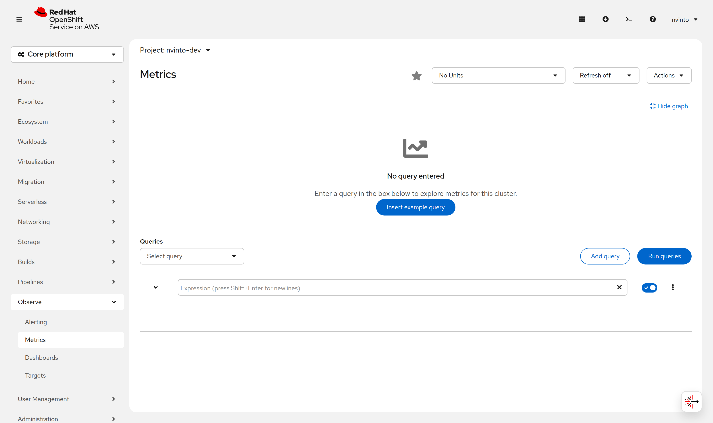
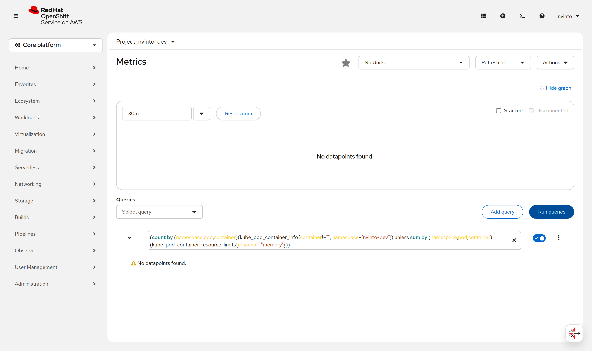
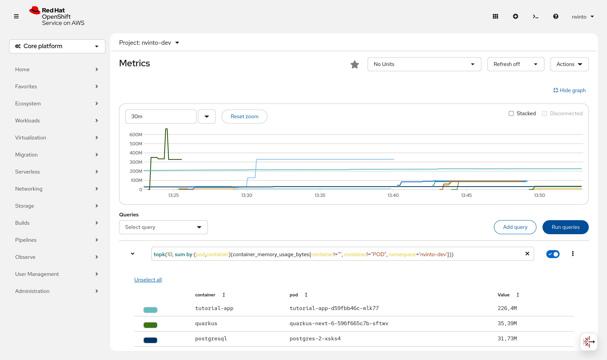
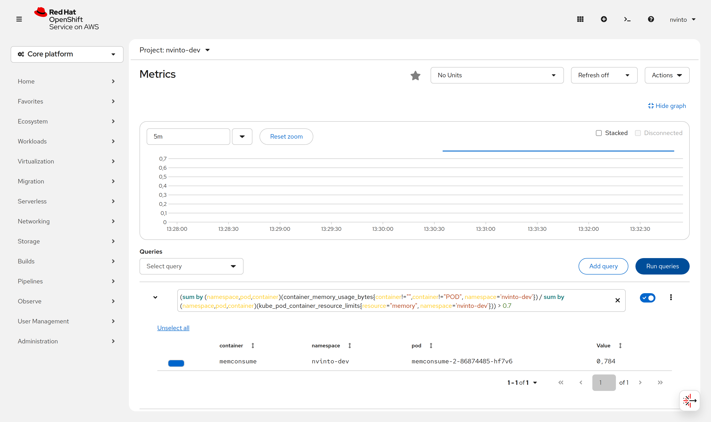
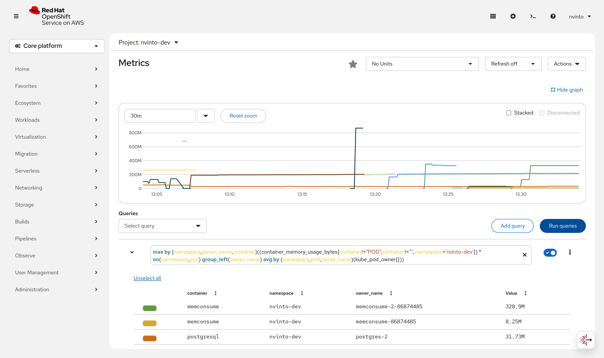
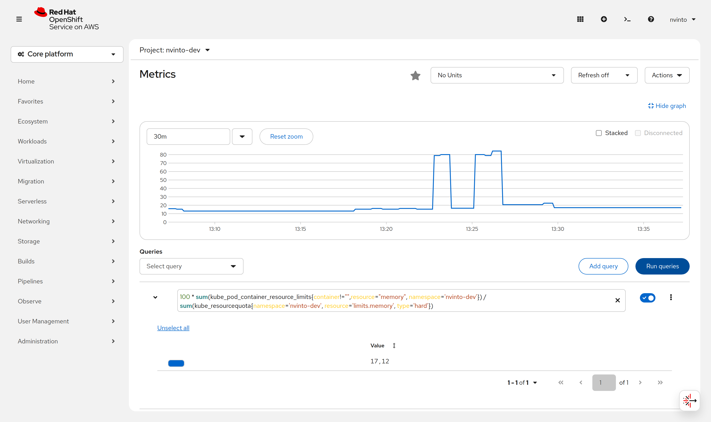
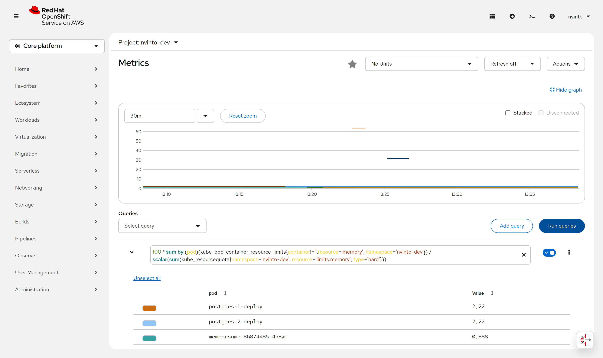

Sizing the Kubernetes resource limits
At this point, you’ve learned why setting limits is important and a first approach to setting these values correctly.
But these are only the initial values; when the service is running, you need to monitor and adapt these values if necessary.
Let’s see how Prometheus can help us detect incorrect limits or set these values in services that have been running for a long time without any limitation.
This chapter was validated on OpenShift 4.21 running in the
Developer Sandbox, where you are a regular user of a
single project. A few steps need cluster-wide privileges; each of them is called out with a
CLUSTER ADMIN admonition and an alternative you can run as a normal user.
|
Understanding requests and limits with examples
It’s important to understand how Kubernetes behaves when request or limit values are exceeded.
Not enough resources
The first thing to know is how much memory you are allowed to use.
On a cluster where you are an administrator, that is the memory of the nodes:
|
CLUSTER ADMIN
The following command reads cluster-scoped objects. As a Developer Sandbox user it fails with
|
kubectl describe nodes | grep "Allocatable" -A 9Allocatable:
attachable-volumes-aws-ebs: 25
cpu: 15500m
ephemeral-storage: 114381692328
hugepages-1Gi: 0
hugepages-2Mi: 0
memory: 64304476Ki (1)
pods: 250
--
Allocatable:
attachable-volumes-aws-ebs: 25
cpu: 15500m
ephemeral-storage: 114381692328
hugepages-1Gi: 0
hugepages-2Mi: 0
memory: 64304476Ki (2)
pods: 250| 1 | Amount of memory on node 1 |
| 2 | Amount of memory on node 2 |
On a multi-tenant cluster you are instead bounded by the ResourceQuota of your project, which is the
number that actually matters to you:
kubectl describe resourcequota compute-deployName: compute-deploy
Namespace: <your-namespace>
Scopes: NotTerminating
* Matches all pods that do not have an active deadline. These pods usually include long running pods whose container command is not expected to terminate.
Resource Used Hard
-------- ---- ----
limits.cpu 1500m 30
limits.memory 912Mi 30Gi (1)
limits.nvidia.com/gpu 0 0
requests.cpu 110m 3
requests.memory 768Mi 30Gi (2)
requests.nvidia.com/gpu 0 0| 1 | The sum of all limits.memory in the project may not exceed 30Gi |
| 2 | The sum of all requests.memory in the project may not exceed 30Gi |
So let’s see what happens when we deploy a container with a requests value bigger than the available free memory.
resources:
requests:
memory: "25Gi" (1)
cpu: "250m" # 1/4 core
limits:
memory: "28Gi"
cpu: "1000m" # 1 core| 1 | Requesting more memory than the free available in any node |
These values must stay below your quota but above the free memory of any single node,
otherwise you get an admission error instead of the Pending status this section is about.
Raise them if your cluster has bigger nodes.
|
Apply the resource:
kubectl apply -f apps/kubefiles/not-enough-resources-deployment.yamlAnd then get the pods to see their status:
kubectl get podsNAME READY STATUS RESTARTS AGE
quarkus-next-5-5c56b868cf-djrr8 0/1 Pending 0 3s (1)| 1 | Status is pending as no node can handle the minimum requirements |
A container will be in Pending status until a new node is added to the cluster meeting the minimum requirements or freeing some resources from a node.
If this happens, Kubernetes would automatically reschedule the Pod into that node.
Run the following command to get information about the pending status:
kubectl describe pod quarkus-next-5-5c56b868cf-djrr8...
Events:
Type Reason Age From Message
---- ------ ---- ---- -------
Warning FailedScheduling 15m default-scheduler 0/24 nodes are available: 10 node(s) had untolerated taint(s), 14 Insufficient memory. preemption: 0/24 nodes are available: 24 No preemption victims found for incoming pod.|
If instead of a Lower the values in the manifest so they fit inside your quota. |
Clean Up
Run the following command to remove what you deployed in this section:
kubectl delete -f apps/kubefiles/not-enough-resources-deployment.yaml
Do not run kubectl delete all --all. It deletes everything in the project, including the
tutorial-app and the PostgreSQL database you deployed in the previous chapters.
|
Exceeding limits memory
Let’s see what happens when a Pod is running and the limit set is exceeded.
resources:
requests:
memory: "400Mi"
cpu: "250m" # 1/4 core
limits:
memory: "500Mi"
cpu: "1000m" # 1 corekubectl apply -f apps/kubefiles/oom-killed-deployment.yamlThe Pod is running as it has enough resources.
kubectl get podsNAME READY STATUS RESTARTS AGE
memconsume-b588f8dc-78jsv 1/1 Running 0 28sThis service has a special endpoint that consumes most of the memory, making the service consume more memory than the one set in the limits section:
kubectl exec -ti memconsume-b588f8dc-78jsv -- /bin/bash (1)
curl localhost:8080/consume| 1 | The -- separator is mandatory; kubectl exec POD COMMAND was removed. |
After that, you’ll be exited from inside the container as it was restarted because of the memory limit.
Run the following command to check that an OOM error was thrown:
kubectl describe pod memconsume-b588f8dc-78jsv...
Containers:
memconsume:
Container ID: cri-o://b5b0da06790b4ace1dadc7adb2b9190a961386b79e68312ac5b2833a89693ee7
Image: quay.io/rhdevelopers/myboot:v1
Image ID: quay.io/rhdevelopers/myboot@sha256:ea9a142b694725fc7624cda0d7cf5484d7b28239dd3f1c768be16fc3eb7f1bd0
Port: 8080/TCP
Host Port: 0/TCP
State: Running
Started: Sun, 21 Sep 2026 11:20:35 +0200
Last State: Terminated
Reason: OOMKilled (1)
Exit Code: 137
Started: Sun, 21 Sep 2026 11:13:21 +0200
Finished: Sun, 21 Sep 2026 11:20:34 +0200
Ready: True
Restart Count: 1
Limits:
cpu: 1
memory: 500Mi
Requests:
cpu: 250m
memory: 400Mi
Environment: <none>
...| 1 | Previous state was: killed because of an out of memory |
So Kubernetes kills a container when it consumes more memory than the one set in the limits section.
As there is a replica set, it’s automatically restarted.
Overcommitment of memory
So far, we’ve seen that when the requested memory is too high, the Pod is not scheduled.
Also, we’ve seen that when a limit is exceeded, the Pod is restarted, but what’s happening when you set a limit value greater than the available memory?
Let’s deploy two deployments where the sum of their limits is bigger than the available memory in the cluster:
resources:
requests:
memory: "300Mi"
cpu: "250m" # 1/4 core
limits:
memory: "14Gi" (1)
cpu: "1000m" # 1 core| 1 | Two deployments are set in the same file with the same limits |
kubectl apply -f apps/kubefiles/sum-exceeding-deployments.yamlBoth Pods are running as they have enough requested resources.
limits are not used to impact the Pod scheduler, only used at runtime to protect memory consumption.
kubectl get podsNAME READY STATUS RESTARTS AGE
quarkus-next-5-6bd8686487-ht6gx 1/1 Running 0 10s
quarkus-next-6-6bd8686487-q5ls6 1/1 Running 0 10sTogether the two Pods have committed 28Gi of memory limits while only asking for 600Mi of actual memory — that is exactly the overcommitment we will measure with Prometheus later in this chapter.
Using Prometheus to size/update memory limits
Let’s see how Prometheus can help us detect incorrect limits or set these values in services running for a long time without any limitation.
In the case of an OpenShift cluster, you can navigate to Observe → Metrics to open the metrics console and run Prometheus queries.

|
OpenShift 4.21 replaced the Developer / Administrator perspectives with a single Core platform navigation, so Observe → Metrics is now the only path to the query browser. The page opens on All Projects. If you are not a cluster administrator that returns
|
In every query below, replace <your-namespace> with the project you are working in
(kubectl config view --minify -o jsonpath='{..namespace}' prints it).
Detecting resources without memory limits
One of the things you might want to detect sooner is any container without memory limits defined.
Let’s see how to use Prometheus to detect these containers. Let’s deploy three services where one service has limits, and the other two are without limits.
kubectl apply -f apps/kubefiles/deployment-resources-limits.yaml
kubectl apply -f apps/kubefiles/no-resources-section-deployment.yaml
kubectl apply -f apps/kubefiles/no-resources-section-deployment-2.yamlLet’s check that all Pods are up and running:
kubectl get podsNAME READY STATUS RESTARTS AGE
memconsume-86874485-ht54w 1/1 Running 0 119s
quarkus-next-5-596f665c7b-ttjkz 1/1 Running 0 118s
quarkus-next-6-596f665c7b-sftwv 1/1 Running 0 14squarkus-next pods are the ones whose manifests declare no limit.
Put the following PromQL expression into the query editor and push the Run queries button.
(count by (namespace,pod,container)(kube_pod_container_info{container!="", namespace='<your-namespace>'}) unless sum by (namespace,pod,container)(kube_pod_container_resource_limits{resource="memory"}))On a cluster with no LimitRange, the output lists the containers of both quarkus-next pods.
On the Developer Sandbox you instead get an empty result:

|
Why the query returns nothing on the Developer Sandbox
The Sandbox project ships a An empty result is therefore the desired outcome — it proves no container in the project is running
unbounded. Run |
The previous query is helpful to get an overview of the situation, but if you’ve got many results, you might not know where to start solving the problem and setting some limits. As limits are directly related to deployment density, you can start with the containers using the most memory.
Put the following PromQL expression into the query editor and push the Run queries button.
topk(10, sum by (pod,container)(container_memory_usage_bytes{container!="", container!="POD", namespace='<your-namespace>'}))
container!="POD" excludes the infrastructure pause container, which is present in every Pod
and would otherwise fill the top 10 with rows of 0 bytes.
|
In this query, you see the top 10 containers with their memory consumption, so you know which ones to
size first. On a cluster without a LimitRange you can keep the unless clause of the previous query
to restrict the list to the containers that have no limit at all:
topk(10,sum by (namespace,pod,container)(container_memory_usage_bytes{container!="", container!="POD", namespace='<your-namespace>'}) unless sum by (namespace,pod,container)(kube_pod_container_resource_limits{resource="memory"}))Clean Up
kubectl delete -f apps/kubefiles/deployment-resources-limits.yaml
kubectl delete -f apps/kubefiles/no-resources-section-deployment.yaml
kubectl delete -f apps/kubefiles/no-resources-section-deployment-2.yamlInspecting current limits
In the previous step, we’ve learned how to get containers without any limit so that we could set a limit.
Also, we’ve seen in the previous section the usage of tools like hey to give a good starting value to requests and limits parameters, but in the end, it’s just a guess value that might be correct or not.
One way to validate the value is to monitor memory usage and validate if a container is close to its memory limits.
Let’s deploy two services:
kubectl apply -f apps/kubefiles/deployment-resources-limits.yaml
kubectl apply -f apps/kubefiles/deployment-resources-limits-2.yamlkubectl get podsNAME READY STATUS RESTARTS AGE
memconsume-2-58b6b94fbf-c4ctw 1/1 Running 0 20s
memconsume-58b6b94fbf-s67tg 1/1 Running 0 82sThe deployed services have a special endpoint that makes the service start consuming some memory.
Run the following command to access the memconsume-2 container and execute the command three times to consume some memory.
kubectl exec -ti memconsume-2-58b6b94fbf-c4ctw -- /bin/bash
curl localhost:8080/hello/consume/100000000
curl localhost:8080/hello/consume/100000000
curl localhost:8080/hello/consume/100000000Run the following PromQL expression to get the list of all containers using more than 70% of the memory set in limits.
(sum by (namespace,pod,container)(container_memory_usage_bytes{container!="", namespace='<your-namespace>'}) / sum by (namespace,pod,container)(kube_pod_container_resource_limits{resource="memory", namespace='<your-namespace>'})) > 0.7
In the previous screenshot, the memconsume-2 container is consuming 78% of its memory limit.
One strategy to set a new value for limits is to increase it by 25% and monitor again.
But what happens to the container that has no limit?
In this case, it’s a good idea to choose the value of the container that consumed the most while it was running.
Run the following PromQL expression to get this value:
max by (namespace,owner_name,container)((container_memory_usage_bytes{container!="POD",container!="", namespace='<your-namespace>'}) * on(namespace,pod) group_left(owner_name) avg by (namespace,pod,owner_name)(kube_pod_owner{}))memconsume-2 consumed a maximum of 328.9M in its lifetime while memconsume just 8.25M.

With this data in mind, containers won’t run out of resources.
Overcommitting
We’ve seen in the Overcommitment of memory section that you can set as much limit as you want and the container will still be deployable.
With few services deployed in the cluster, it’s easier to control the limits of each one so as not to overcommit the total amount of memory.
We can check the overcommit percentage of our namespace on memory, that is summing the total amount of memory available and the total amount of limits.
|
CLUSTER ADMIN
|
100 * sum(kube_pod_container_resource_limits{container!="",resource="memory", namespace='<your-namespace>'} ) / sum(kube_node_status_capacity{resource='memory'})Having the percentage against the whole cluster is useful, but since Pods are deployed into specific nodes, it’s more beneficial to know this relationship by node.
100 * sum by (node)((kube_pod_container_resource_limits{container!='',resource='memory', namespace='<your-namespace>'} ))/sum by (node)(kube_node_status_capacity{resource='memory'})Measuring overcommitment against your quota
On a multi-tenant cluster the meaningful denominator is not the cluster memory but the
limits.memory of your ResourceQuota, and kube_resourcequota is visible to you.
Run the following PromQL expression to get the percentage of your quota that is already committed:
100 * sum(kube_pod_container_resource_limits{container!="",resource="memory", namespace='<your-namespace>'}) / sum(kube_resourcequota{namespace='<your-namespace>', resource='limits.memory', type='hard'})In this case, the sum of all limits of the project is 17.12 % of the memory the project is allowed to commit.

And to see which Pod is responsible for which share of that budget:
100 * sum by (pod)(kube_pod_container_resource_limits{container!='',resource='memory', namespace='<your-namespace>'}) / scalar(sum(kube_resourcequota{namespace='<your-namespace>', resource='limits.memory', type='hard'}))
Automatic Scaling
When dealing with limits, you might want to protect against running out of resources. Kubernetes offers the Horizontal Pod Autoscaler (HPA), a way to configure Kubernetes to increase replicas depending on CPU or memory usage.
Deploying application
Deploy the following application which has aggressive limitations for its business use case (calculating the first 100 prime numbers).
---
apiVersion: v1
kind: Service
metadata:
annotations:
prometheus.io/scrape: "true"
prometheus.io/path: /q/metrics
prometheus.io/port: "8080"
prometheus.io/scheme: http
labels:
app.kubernetes.io/name: bs-mem-mgnt
app.kubernetes.io/version: 1.0.0-SNAPSHOT
app.kubernetes.io/managed-by: quarkus
name: bs-mem-mgnt
spec:
ports:
- name: http
port: 80
protocol: TCP
targetPort: 8080
selector:
app.kubernetes.io/name: bs-mem-mgnt
app.kubernetes.io/version: 1.0.0-SNAPSHOT
type: ClusterIP
---
apiVersion: apps/v1
kind: Deployment
metadata:
labels:
app.kubernetes.io/name: bs-mem-mgnt
app.kubernetes.io/version: 1.0.0-SNAPSHOT
app.kubernetes.io/managed-by: quarkus
name: bs-mem-mgnt
spec:
replicas: 1
selector:
matchLabels:
app.kubernetes.io/version: 1.0.0-SNAPSHOT
app.kubernetes.io/name: bs-mem-mgnt
template:
metadata:
labels:
app.kubernetes.io/managed-by: quarkus
app.kubernetes.io/version: 1.0.0-SNAPSHOT
app.kubernetes.io/name: bs-mem-mgnt
spec:
containers:
- env:
- name: KUBERNETES_NAMESPACE
valueFrom:
fieldRef:
fieldPath: metadata.namespace
image: quay.io/lordofthejars/bs-mem-mgnt:1.0.0-SNAPSHOT
imagePullPolicy: Always
name: bs-mem-mgnt
ports:
- containerPort: 8080
name: http
protocol: TCP
resources:
limits:
cpu: 100m (1)
memory: 800Mi
requests:
cpu: 50m
memory: 250Mi| 1 | A tenth of a core is deliberately too little for the workload, so the HPA reacts quickly |
Apply the deployment file:
kubectl apply -f apps/kubefiles/deployment-prime.yamlThen create an OpenShift Route to access the service:
oc expose service/bs-mem-mgnt
oc get route bs-mem-mgntNAME HOST/PORT SERVICES PORT TERMINATION WILDCARD
bs-mem-mgnt bs-mem-mgnt-<your-namespace>.apps.<cluster>.openshiftapps.com bs-mem-mgnt http NoneAnd apply the HPA definition:
apiVersion: autoscaling/v2
kind: HorizontalPodAutoscaler
metadata:
name: example
spec:
scaleTargetRef:
apiVersion: apps/v1
kind: Deployment
name: bs-mem-mgnt
minReplicas: 1
maxReplicas: 5
metrics:
- type: Resource
resource:
name: cpu
target:
averageUtilization: 50
type: Utilizationkubectl apply -f apps/kubefiles/hpa.yamlIn this definition, we set that at most only 5 pods can be created, and the metric to scale up (and down) Pods is the CPU.
Testing
Let’s generate some traffic to validate that the Pod scales from 1 to more than one.
In a terminal window let’s use hey to generate traffic:
hey -c 10 -z 15s http://$(oc get route bs-mem-mgnt -o jsonpath='{.spec.host}')/hello/primeList the Pods to validate that more than one replica has been created automatically.
kubectl get podsNAME READY STATUS RESTARTS AGE
bs-mem-mgnt-68996cc846-5z9j8 1/1 Running 0 8m52s
bs-mem-mgnt-68996cc846-dr6wr 1/1 Running 0 4m56s
bs-mem-mgnt-68996cc846-jps9h 1/1 Running 0 6m26s
bs-mem-mgnt-68996cc846-qdmns 1/1 Running 0 5m41sAnd inspect the autoscaler itself:
kubectl get hpaNAME REFERENCE TARGETS MINPODS MAXPODS REPLICAS AGE
example Deployment/bs-mem-mgnt cpu: 3%/50% 1 5 4 7m
Scaling down is deliberately slow (the default stabilization window is 5 minutes), so the
replica count stays high for a while after hey finishes.
|
Automatic Requests and Limits
But there is another way to calculate requests and limits.
And that’s using the Vertical Pod Autoscaler.
The Vertical Pod Autoscaler automatically computes historical and current CPU and memory usage for the containers in those pods and uses this data to determine optimized resource limits and requests to ensure that these pods are operating efficiently at all times.
|
CLUSTER ADMIN
Unlike the HPA, the VPA is not part of Kubernetes: it is delivered as an Operator that a cluster administrator has to install cluster-wide. This whole section cannot be completed on the Developer Sandbox. As a regular user you will observe:
Read through the steps to understand the mechanism, and come back to them on a cluster where you are an administrator. |
Installing VPA
To install the Vertical Pod Autoscaler in OpenShift, install the Vertical Pod Autoscaler Operator with all defaults.
OpenShift 4.21 merged the Developer and Administrator perspectives into a single
Core platform navigation and OperatorHub is now reached through Ecosystem → Software Catalog.
The old /operatorhub/ns/<namespace> URL returns 404: Page Not Found.
|
To validate the installation run the following command:
kubectl get all -n openshift-vertical-pod-autoscalerNAME READY STATUS RESTARTS AGE
pod/vertical-pod-autoscaler-operator-d6c49564f-gtlnk 1/1 Running 0 94s
pod/vpa-admission-plugin-default-564579f77d-vpv2f 1/1 Running 0 69s
pod/vpa-recommender-default-6594f58866-bkvxk 1/1 Running 0 69s
pod/vpa-updater-default-545d8b84c6-4wrw6 1/1 Running 0 69s
NAME TYPE CLUSTER-IP EXTERNAL-IP PORT(S) AGE
service/vpa-webhook ClusterIP 172.30.230.170 <none> 443/TCP 69s
NAME READY UP-TO-DATE AVAILABLE AGE
deployment.apps/vertical-pod-autoscaler-operator 1/1 1 1 94s
deployment.apps/vpa-admission-plugin-default 1/1 1 1 69s
deployment.apps/vpa-recommender-default 1/1 1 1 69s
deployment.apps/vpa-updater-default 1/1 1 1 69s
NAME DESIRED CURRENT READY AGE
replicaset.apps/vertical-pod-autoscaler-operator-d6c49564f 1 1 1 94s
replicaset.apps/vpa-admission-plugin-default-564579f77d 1 1 1 69s
replicaset.apps/vpa-recommender-default-6594f58866 1 1 1 69s
replicaset.apps/vpa-updater-default-545d8b84c6 1 1 1 69sDeploying the application
Let’s deploy an application to test autoscaling in the case of CPU usage:
apiVersion: apps/v1
kind: Deployment
metadata:
name: my-auto-deployment
spec:
replicas: 2
selector:
matchLabels:
app: my-auto-deployment
template:
metadata:
labels:
app: my-auto-deployment
spec:
containers:
- name: my-container
image: quay.io/rhdevelopers/mem-consumer:1.0.0-SNAPSHOT
resources:
requests:
cpu: 100m
memory: 50Mi
command: ["/bin/sh"]
args: ["-c", "while true; do timeout 0.5s yes >/dev/null; sleep 0.5s; done"] (1)| 1 | Container is constantly consuming CPU |
kubectl create -f apps/kubefiles/my-auto-deployment.yamlConfiguring VPA
The following step is to configure the VPA.
apiVersion: autoscaling.k8s.io/v1
kind: VerticalPodAutoscaler
metadata:
name: my-vpa
spec:
targetRef:
apiVersion: "apps/v1"
kind: Deployment
name: my-auto-deployment (1)
updatePolicy:
updateMode: "Auto" (2)| 1 | Configures which deployment can be vertically scaled |
| 2 | Automatically apply the CPU and memory recommendations throughout the pod lifetime |
kubectl apply -f apps/kubefiles/my-vpa.yamlAfter 30 seconds or so, run the top command to inspect the resource usage:
kubectl top podNAME CPU(cores) MEMORY(bytes)
my-auto-deployment-858b7f8944-pt2f9 291m 1MiThen you can get the status of the Vertical Pod Autoscaler by running the following command:
kubectl get vpaNAME MODE CPU MEM PROVIDED AGE
my-vpa Auto 49sIf no values are shown it means that there is still not enough data for the VPA to calculate a value. Repeat the command until you see a value:
kubectl get vpaNAME MODE CPU MEM PROVIDED AGE
my-vpa Auto 716m 262144k True 65sWhen a new value is assigned, an automatic rolling update of the containers is executed:
kubectl get podsNAME READY STATUS RESTARTS AGE
my-auto-deployment-858b7f8944-dwbpw 1/1 Running 0 30s
my-auto-deployment-858b7f8944-pt2f9 1/1 Running 0 2m13s
my-auto-deployment-858b7f8944-qjfgs 1/1 Terminating 0 2m13sFinally, describing the new Pod shows the new request values:
kubectl describe pod my-auto-deployment-858b7f8944-dwbpwAnnotations: k8s.v1.cni.cncf.io/network-status:
[{
"name": "ovn-kubernetes",
"interface": "eth0",
"ips": [
"10.130.1.23"
],
"default": true,
"dns": {}
}]
vpaObservedContainers: my-container
vpaUpdates: Pod resources updated by my-vpa: container 0: cpu request, memory request (1)
Status: Running
IP: 10.130.1.23
IPs:
IP: 10.130.1.23
Controlled By: ReplicaSet/my-auto-deployment-858b7f8944
Containers:
my-container:
Container ID: cri-o://78af08b45ae4806704d93960f7ca67b7c6627bb920a2a0c4bd3d259f5e909191
Image: quay.io/rhdevelopers/mem-consumer:1.0.0-SNAPSHOT
Image ID: quay.io/rhdevelopers/mem-consumer@sha256:3ee9aa3a4ef9831ca02340ba8b36732ffbc034cd7696bd0572ed245596e44689
Port: <none>
Host Port: <none>
Command:
/bin/sh
Args:
-c
while true; do timeout 0.5s yes >/dev/null; sleep 0.5s; done
State: Running
Started: Sun, 21 Sep 2026 09:33:21 +0200
Ready: True
Restart Count: 0
Requests:
cpu: 716m (2)
memory: 262144k (3)
Environment: <none>| 1 | Deployment is annotated as VPA |
| 2 | New CPU value |
| 3 | New memory value |